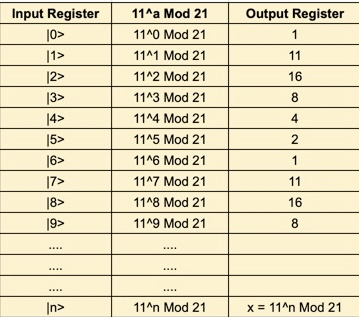

Shor's Algorithm
Quantum Breakthrough in Cybersecurity

Are you tired of waiting ages for your computer to crack complex encryption codes? Well, get ready to be blown away by the mind-bending power of Shor's algorithm! Picture this: a revolutionary mathematical algorithm that could potentially dismantle the walls of modern cryptography. Get ready to have your understanding of computational limits shattered as we dive into the enigmatic world of Shor's algorithm and uncover its jaw-dropping implications for the future of security and cryptography.
Invented in 1994 by Peter Shor, Shor's algorithm is a groundbreaking mathematical method designed to solve a particular problem: factoring large numbers into their prime factors, something that mathematicians deemed impossible for a long time.
Shor's algorithm uses the quantum computing principles to run efficiently in polynomial time while the classical factorization can at best run at exponential time limiting the classical computer's powers. The classical algorithms can factor numbers with at most with a few hundred digits.
The world record is d = 232, and this took roughly 2000 CPU years (approximately 17,520,000 normal years). While in the graph, you can see that the Shor's algorithm has polynomial runtime of d^3.
These are the definitions of some important terms that you'll be seeing on this page:
Shor's algorithm involves several main steps to factorize a large number efficiently:
To factor an integer N = 21.
Step-1: Ensure that the number N is not prime, even or an integer power of prime which can be done using classical methods.
Step-2: Choose an integer 'q' between N^2 < q < 2N^2. (q = 512)
Step-3: Pick a random integer x where GCD(x, N) = 1. (x = 11)
Step-4: Then, we create 2 entangled quantum registers:
1. Input Register - containing sufficient qubits for representing numbers as big as q -1.(Here, q - 1 = 511 => 9 qubits needed)
2. Output Register - containing sufficient qubits for representing numbers as big as N-1.(Here, N - 1 = 20 => 5 qubits needed)
Step-5: Load the input register with an equally weighed superposition of integers from 0 to q-1. (0 to 511)
Step-6: Load the output register with zeros. The total state of the system is
Step-7: Apply the transformation - "x^a mod N" to each number in input register and store the result in output register.
Step-8: After measuring the output register, it will collapse to 1 result of the transformation 'c' out of 1, 11, 16, 8, 4, and 2 here.Let's select c = 1.
Step-9: As the 2 registers are entangled, measuring the output register will partially collapse the input register into an equal superposition of each state between 0 and q-1 that yielded c => All numbers 'y' such that 11^y Mod 21 = 1.
Then the input register's state is[(1/√86) |0> + (1/√86) |6> + (1/√86) |12> + (1/√86) |18> + (1/√86) |24> + .... ].
The probabilities here are (1/√86) as our register is in an equal superposition of 86 values which are 0, 6, 12, ..., 510.
Step-10: We then apply Quantum Fourier Transform (QFT) on the input register. The QFT takes a state |a> and transforms it into a state :
Step-11: After doing the computations with the values y that yield 11^y Mod 21 = 1, we obtain the final state of the input register:
Step-12: The QFT will peak the probability amplitudes at the integer multiples of (q/r) i.e. 512/6 as here r is the desired period which is 6 in this case.
Thus, the peak probability will be at |85.33>, |170.66>, |256>, .....
As a result, we do not have an equal superposition of states, and the probability amplitudes of above states are now higher than the other states.
Step-13: Then, we measure the state 'm' of register one and with help of q and m, we calculate the period using continuous fraction expansion of the ratio of q and m.
Step-14: Finally, using the period (P), we calculate the factors of N by taking the GCD of each x^(P/2) + 1 and x^(p/2) - 1 with N using a classical computer.
In our case, P = 6 and the factors are : GCD(11^(6/2) +1, 21) = 3 and GCD(11^(6/2) - 1, 21) = 7.
N represents the number we want to factor. For Shor's algorithm to properly function the number we want to factor must satisfy two conditions:
Below is the general layout of a quantum circuit that calculates Shor's algorithm.
The primary application of Shor's algorithm lies in its potential to break the widely used public-key encryption schemes based on the difficulty of factoring large numbers. By efficiently factoring large numbers, Shor's algorithm poses a significant threat to the security of these encryption schemes. Public-key encryption is a crucial component of modern secure communication, including online transactions, data protection, and secure messaging. It relies on the fact that factoring large numbers into their prime factors is computationally hard for classical computers. However, Shor's algorithm, when executed on a powerful enough quantum computer, has the potential to factorize these numbers efficiently, undermining the security provided by such encryption schemes. If Shor's algorithm becomes practically implementable on a large-scale, it could compromise the security of widely adopted encryption algorithms like the RSA (Rivest-Shamir-Adleman) and elliptic curve cryptography (ECC). This would necessitate the development and adoption of new cryptographic systems resistant to attacks from quantum computers, such as post-quantum cryptography. Apart from breaking encryption, Shor's algorithm has implications in other areas of computation as well. It provides a demonstration of the power of quantum computing to solve certain mathematical problems more efficiently than classical computers. This, in turn, can contribute to advances in fields like optimization, simulation, and solving mathematical equations, where the factorization problem is an important subroutine. While the practical implementation of Shor's algorithm on a large-scale quantum computer is still a significant technological challenge, its potential impact on encryption and computational fields makes it a subject of intense research and development. Researchers are actively exploring quantum-resistant cryptographic techniques and working towards the realization of practical quantum computers to harness the power of Shor's algorithm and develop secure cryptographic systems for the future.
In conclusion, Shor's algorithm is a groundbreaking mathematical algorithm in the field of quantum computing. It has the potential to break widely used public-key encryption schemes by efficiently factoring large numbers into their prime factors. Shor's algorithm can solve the factorization problem at an accelerated rate compared to classical computers. The application of Shor's algorithm raises significant concerns for the security of current encryption methods, which form the backbone of secure communication, online transactions, and data protection.